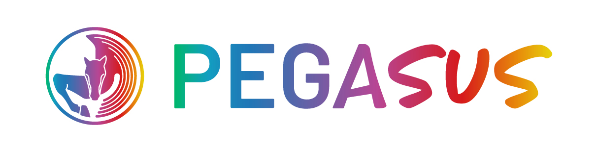
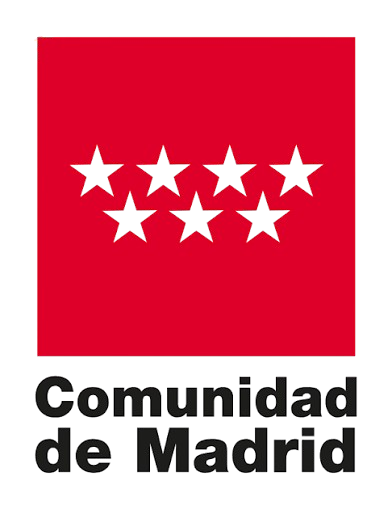

·
Somos Fundación Pegasus y estamos desarrollando, junto con la Comunidad de Madrid, un trabajo piloto para acompañar emocionalmente a las familias y cuidadores de personas con discapacidad. Lo pondremos en marcha con las primeras 60 familias que se apunten, sin coste para ellas.
Siguiendo la carta que os hizo llegar la Comunidad de Madrid, os invitamos a un webinar para contaros el proyecto y resolver vuestras dudas.
Un trabajo piloto que desarrollamos junto con la Comunidad de Madrid y que arranca en noviembre de 2026. El objetivo es sencillo: reducir el sufrimiento del entorno de las personas con discapacidad — sus familias y cuidadores. Lo implementaremos con las primeras 60 familias que se apunten, sin coste para ellas. No trabajamos sobre la persona con discapacidad: trabajamos con quien cuida.
Cuando llega un diagnóstico, es natural que el foco vaya a la persona con discapacidad. Y alrededor hay una familia que también se tambalea y se reorganiza, viviendo un proceso emocional del que pocas veces se habla. Eso es «lo que nadie te cuenta». Y cuando la familia está mejor, la persona con discapacidad vive mejor.
Es un proyecto piloto que desarrollamos junto con la Comunidad de Madrid —en concreto con la Dirección General de Atención a Personas con Discapacidad, de la Consejería de Familia, Juventud y Asuntos Sociales—, dentro de la Estrategia Horizonte 2028.
Detrás estamos nosotros, la Fundación Pegasus, un equipo que trabaja cada día con familias de personas con discapacidad.
Sabemos que vuestros equipos ya acompañáis cada día a estas familias. Nuestro trabajo suma a lo vuestro: una capa de acompañamiento emocional especializado, con tiempo y foco dedicados solo a eso. Estas son las dudas más habituales:
David Rodríguez, fundador de Fundación Pegasus.
Asistir es importante: es donde os explicamos, de principio a fin, cómo va a funcionar todo el proceso —el proyecto, el cronograma y cómo pueden participar las familias de vuestro centro— y resolvemos todas vuestras dudas. Elige la fecha que mejor te venga:
Para apuntarte, escribe a alvaro.diaz@fundacionpegasus.org indicando tu nombre, tu centro, tu cargo, tu teléfono y cuál de los dos webinars eliges (28 o 30 de julio). Te enviaremos la invitación con el enlace de conexión.